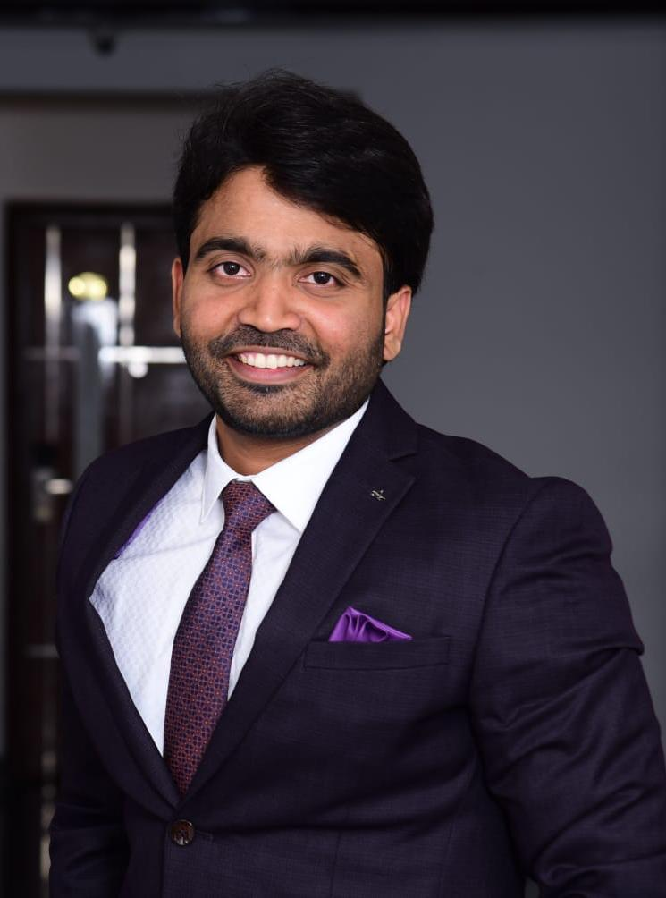

Sairam Nallamothu

Summary
I am an SAP Technical Architect with over 9+ years of IT experience.
Education
- Bachelors of Computer Science - JNTU Kakinada(2011-2015)
Work Experience
-
SAP BASIS Consultant - TCS
May 2015 - Feb 2018
- Supported for SAP systems installation
- Suppported for issues
- Designed the architecture for process tools
-
SAP BASIS Consultant - BOSCH
Feb 2018 - Jan 2020
- Supported for End to End implementations of SAP systems
- Suppported for issues
- Supported for multiple support projects
-
SAP BASIS Consultant - MBRDI
Jan 2020 - Aug 2021
- Supported for operations of SAP systems
- Suppported for issues
Skills
- SAP BASIS: ⭐️⭐️⭐️⭐️⭐️
- SAP HANA: ⭐️⭐️⭐️⭐️
- Sybase, Oracle databases: ⭐️⭐️⭐️⭐️
Certifications
- SAP BASIS Certified
- SAP HANA Certified
- TOGAF Certified
Others
© Sairam Nallamothu. All rights reserved